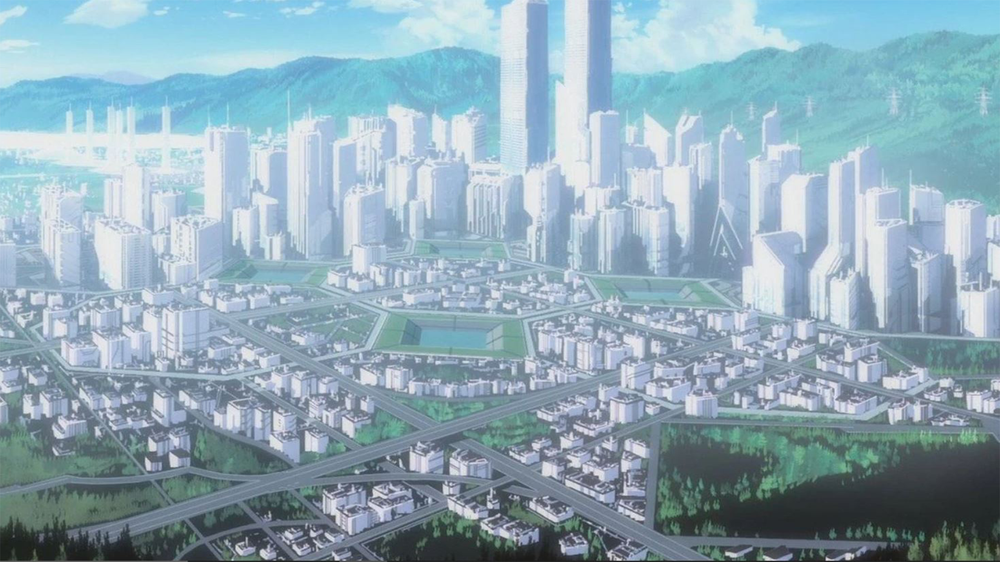

Think you've got what it takes to pilot a giant robot? No? Well today's your lucky day, because that's exactly what you're doin'!
Before Tokyo 3 is subject to further relentless barrage of Angel attacks, let me give you a quick rundown on what we've got here. Oh, and we're really strapped for time so I mean QUICK.
I want you to have a look around the place and familiarise yourself with the surroundings, then I'll get you to go headfirst into the line of fire!
Strap in! This simulation is incredibly realistic!

Here's the city you're gonna be protecting, namely Tokyo 3! This is what it looks like above ground. (Don't ask about the other two cities). This is Nerv HQ! Some might argue the architecture is excessivley extravagant... but doesn't it just look so cool!?